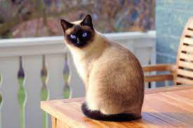
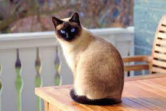

Si quieres ver más imagénes de gatitos, da click en este enlace..
3 cosas que los gatitos aman
3 cosas que los gatitos odian
¿Tu gatito es cachorro o es adulto?
¿Qué tipo de personalidad tiene tu gato?
 
